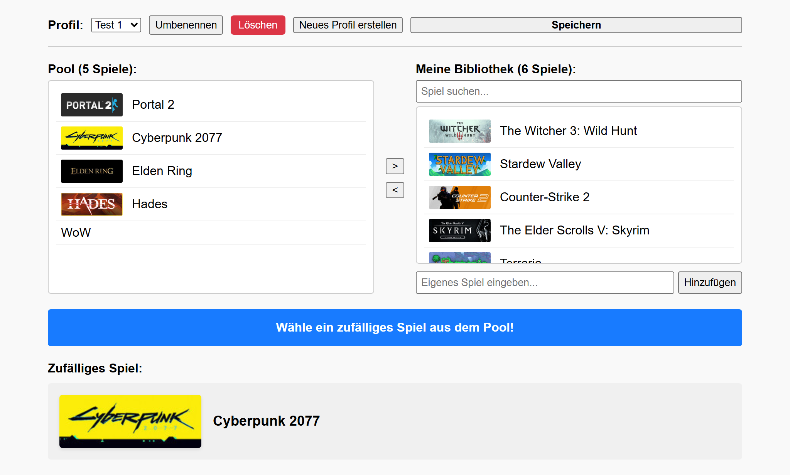
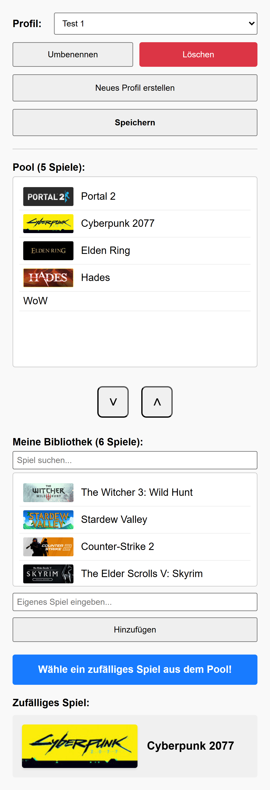

Steam
Randomizer
Web Edition • UI/UX Case Study
Das Projekt begann als lokale JavaFX-Desktopanwendung. Das Ziel: Das bekannte „Paradox of Choice“ lösen – man hat hunderte Spiele in seiner Steam-Bibliothek, weiß aber trotzdem nicht, was man spielen soll. Um das Nutzererlebnis flexibler zu machen, habe ich die Anwendung als responsive Web-App komplett neu konzipiert.
- Tech-Stack React, Vite, CSS3
- Backend Firebase (Firestore)
- Schnittstelle Steam Web API

Responsive Web App UI
Hinweis zur Live-Demo: Für dieses Portfolio wurde eine interaktive Demo-Version mit Showcase-Daten hinterlegt, die ohne Steam-Login direkt im Browser getestet werden kann.
Konzeptions-Wechsel: Vom Prototyp zur Web-App
Die ursprüngliche Desktop-Version war bewusst kein UX-Projekt – sie entstand als reines Lernprojekt, um Java zu üben. Erst im täglichen Alltag zeigte sich das eigentliche Problem: Die Anwendung war an einen festen Rechner gebunden. Der explizite Wunsch, denselben Spiele-Pool auch schnell und bequem vom Smartphone aus zu nutzen, war der konkrete Auslöser für die Neukonzeption als Web-App. Es stand von Beginn an eine ganz praktische Frage im Mittelpunkt: Wie muss sich das Interface auf einem kleinen Touchscreen grundlegend anders anfühlen als am Desktop, um eine echte ergonomische Verbesserung zu bieten?
UI/UX Highlights
Cognitive Load Management: Eine Steam-Bibliothek mit mehreren Spielen ist visuell erschlagend. Das UI nutzt ein klares Split-Pane-Design (Zwei-Spalten-Layout). Links der fokussierte „Pool“ (die aktuelle Vorauswahl), rechts die durchsuchbare Gesamtbibliothek. So wird die kognitive Last reduziert.
Plattformübergreifende Ergonomie: Auf dem Smartphone bricht das Layout nicht einfach um: Die Interaktions-Pfeile zwischen den Listen rotieren dynamisch um 90 Grad. Dies unterstützt die vertikale Struktur und die natürliche Daumenbewegung auf Touchscreens.

Mobile Ergonomie & Responsive Layout
Case Study: Kontextbezogenes Gaming
01. Das Problem
Gamer suchen oft nicht einfach nur „ein zufälliges Spiel“. Die Entscheidung ist stark kontextabhängig (z. B. „Feierabend-Spiele“, „Lokaler Multiplayer“ oder „Lange RPGs für das Wochenende“). Den Auswahl-Pool jedes Mal aus hunderten Spielen neu zusammenklicken zu müssen, ist schlechtes UX.
02. Die Lösung
Implementierung eines dynamischen Profil-Systems, das über eine Firebase Firestore Datenbank synchronisiert wird. Nutzer können sich thematische Pools als eigene Profile abspeichern und per Dropdown in Echtzeit zwischen ihnen wechseln. Ergänzt durch ein Feld für „Custom Games“ (Epic Games, Emulatoren).
03. Das UX-Ergebnis
Durch die Cloud-Synchronisation entsteht ein nahtloses Cross-Device-Erlebnis. Der Nutzer kuratiert seine Profile bequem am PC mit Maus und Tastatur. Am Sofa genügt ein Griff zum Smartphone: Das Profil ist sofort geladen und der Randomizer wird mit einem einzigen Tap ausgelöst.